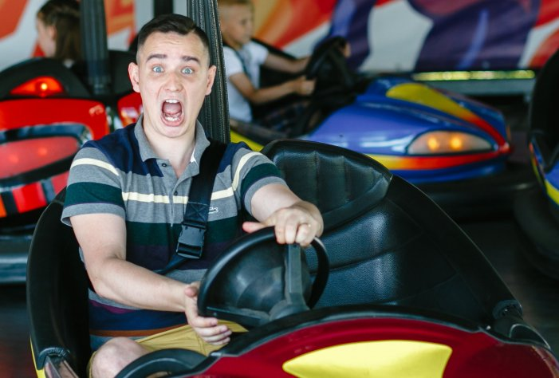

Когда то давным давно.. ну, как давным давно, четверть века и один год назад я появился на свет. Это произошло в городе Ленинграде, в стране, где "Красная машина" ещё вселяла ужас в своих оппонентов :D ну да ладно ;) Моему появлению на свет поспособствовали два очень дорогих мне человека. Моя мама, Наумова Татьяна Егоровна, родившаяся в Перми, и мой отец, Наумов Игорь Валерьевич, родившийся в городе Бугульма. Спасибо вам огромное, очень сильно вас люблю!
Если честно, то я особо не помню своего детства, но давайте попробуем вместе окунутся в те моменты прошлого, которые всё таки задержались в моей памяти, видимо они на самом деле были для меня значимы, если верить психологии :)
Первое, что вспоминается, где то на последних годах хождения в садик, мы всей семьей переехали в Бугульму, поселились в частном доме. Папа в то время занимался тем, что лежит в основе Российской экономики - купи-продай (расспросите его, он может рассказать множество баек). В то время у нас в доме была куча коробок со всякими вкусностями, которые периодически удавалось попробовать :P Однажды испортилась большая коробка с киндер-сюрпризами, шоколада поесть не удалось, но зато была огромная гора игрушек!
Помню, на одном из моих дней рождений мы куда то ехали на буханке (или это была не совсем она, с тентовым багажником), и папа разгонялся до супер скорости!!!, чтобы повеселить меня. Мне было действительно весело, но вот мама так не думала ;D
В то время или немного позже я с дедушкой Валерой (папиным отцом. Он, кстати, мастер спорта по шахматам и здорово играет в хоккей!) ходил в шахматный клуб. Там я пытался научиться играть, играя партии, как с ребятами моего возраста, так и взрослыми. Был там один парень, перворазрядник, я всё никак не мог его обыграть, но однажды мне это удалось, это были потрясающие эмоции!
А чаще всего на лето я ездил в деревню Царевщина к родителям мамы. Там я помогал сажать и выкапывать картошку, копался в огороде, но большую часть времени я шнырял по деревне, иногда находил приключения на свою пятую точку. Кстати, и тут мне довелось играть в шахматы. Дедушка Вадим играл очень хорошо. По рассказам, он даже обыгрывал дедушку Валеру!!!
Помню, как однажды у меня шантажом выманили велик :( сказав, что на пару часов, а в итоге его угнали на весь день. Уже стемнело. Парень с моим великом всё не возвращался ;( Тут уже мама начала меня искать. Нашла и говорит: "Иди сюда!". Это был, наверное, единственный раз, когда я не подошёл, а убегал со всех ног :D да, да.. иногда я получал :) Велик потом вернули, так что всё хорошо!
А ещё один раз я там заболел, в тамошней больнице поставили диагноз ОРЗ.., но от лечения лучше не становилось, и мы поехали обратно в Питер, где мне поставили новый диагноз - Пневмония, и, как следствие, уколы 3 раза в день. Отличное окончание лета :)
Кстати, мы часто ездили на машине ко всем родственникам. Общий маршрут в одну сторону - около 2000 км.
Учился я в общеобразовательной школе №591. С первого класса меня отдали на бальные танцы, которыми в итоге я прозанимался около 7 лет своей жизни. Сначала они мне нравились, потом я хотел бросить, но мама меня всячески уговаривала, а может и заставляла продолжать:D Потом я снова втянулся и уже сам с удовольствием на них ходил! С танцами я ездил в лагерь в Одессу, а после окончания нас собирали и мы вместе отдыхали в Севастополе. Но на самом деле, за 7 лет занятий бальными танцами мне больше всего понравились последние 2 года, когда перешел в клуб ”Viva Dance” к Татьяне Владимировне Боярской, спасибо Вам, помню, люблю, скорблю. Несмотря на её строгость, она на всегда останется для меня эталоном тренера и человеком своего дела! Параллельно танцам я занимался то карате (примерно год), то плаванием (правда, там я не научился плавать.. и больше всего любил крайнюю дорожку, где можно было притворяться, что плывешь, перебирая ногами по поребрику у крайней стеки бассейна :D Что самое удивительное, тренер не просекал фишку и хвалил меня :D ). После занятия танцами я начал заниматься футболом. Это продлилось около 2х лет (тогда я даже болел за Зенит и смотрел футбол, теперь от него меня клонит в сон..). А после вновь попал в танцевальный коллектив эстрадных танцев. Там мне довелось потанцевать даже народные танцы :) С этим коллективом я побывал в Венгрии и Болгарии.
В 11 классе решили, что я буду поступать в БГТУ "ВОЕНМЕХ" им. Д.Ф. Устинова. Для поступления туда я начал заниматься с тамошними преподавателями по математике и физике, готовясь к олимпиадам, сдача которых гарантировала поступление на бюджет. Занятия физикой были ужасны, приходилось учить всё с нуля за один учебный год. К счастью обе олимпиады были написаны на пятерки, и вопрос о поступлении был снят :) Таким образом я стал студентом этого университета и успешно его закончил. Также я отучился на военной кафедре и получил звание лейтенанта. Если честно, ничем особо выдающимся универ для меня не был, всему, что я использую на работе, я научился уже после универа. Но он дал мне моих друзей, теперь мне есть кого пригласить на свадьбу :D :D :D Надеюсь, вы придёте!!!
После окончания университета я сразу устроился в НТЦ “Аргус”. Сначала на должность инженера технической поддержки. Проработав год, перешел в отдел миграции данных. А затем решил развивать свои профессиональные качества в сторону программирования и закончил курсы по “Java”. С новыми знаниями я перешел на должность Java разработчика, где и продолжаю трудится :) Между прочим, именно в Аргусе мы с Юлей и познакомились :) А историю наших отношений вы можете увидеть на сайте ниже!
Надеюсь я вас не утомил и вы узнали обо мне что то новенькое! :)